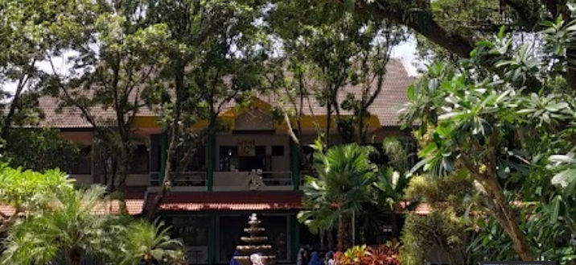
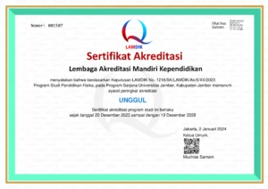

Sejarah

Program Studi Pendidikan Fisika (Prodi P. Fisika) didirikan pada tanggal 18 Juli 1984 berdasarkan SK Pendidikan Tinggi (DIKTI) No : 44/DIKTI/Kep/1984. Mahasiswa angkatan pertama adalah mahasiswa angkatan 1983, sehingga pada tahun 2024 nanti, Prodi P. Fisika akan menerima mahasiswa angkatan ke 42. Pada awal pendiriannya, Prodi P. Fisika terakreditasi C terus berkembang sehingga bisa terakreditasi B sampai 29 November 2018. Dan mulai tanggal 19 Desember 2018 sampai dengan 19 Desember 2023 menjadi Prodi yang terakreditasi A. Kemudian mulai 20 Desember 2023 sampai dengan 19 Desember 2028, Prodi P. Fisika telah terakreditasi UNGGUL.
Akreditasi

Berdasarkan Keputusan Lembaga Akreditasi Mandiri Kependidikan (LAMDIK) nomor: 1216/sk/lamdik/ak/s/xii/2023 tentang peringkat akreditasi Program Studi Pendidikan Fisika pada program sarjana Universitas Jember, Kabupaten Jember Lembaga Akreditasi Mandiri Kependidikan, maka sejak tanggal 20 Desember 2023 sampai dengan tanggal 19 Desember 2028 menetapkan peringkat akreditasi Program Studi Pendidikan Fisika pada Program Sarjana Universitas Jember, Kabupaten Jember adalah UNGGUL dengan nilai 367.
Profil lulusan
Berdasarkan Visi dan Misi Prodi, maka profil lulusan Prodi P. Fisika ada 3, yaitu:
| No |
Profil Lulusan |
Deskripsi Profil Lulusan |
| 1. |
Pendidik Fisika |
Menguasai konsep fisika dan pembelajaran fisika sehingga bisa mendukung tugasnya sebagai sarjana pendidikan fisika khususnya di sekolah SMA/MA/SMK |
| 2. |
Peneliti muda bidang kependidikan dan keilmuan fisika |
Peneliti muda yang dapat memberikan kontribusi bagi pemecahan permasalahan fisika dan pendidikan fisika |
| 3. |
Enterpreneur |
Enterpreneur bidang fisika, pendidikan fisika atau bidang lainnya menjadi peluang bisnis baik secara mandiri maupun kelompok. |